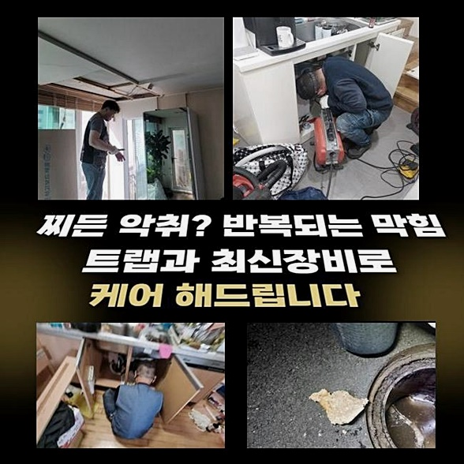
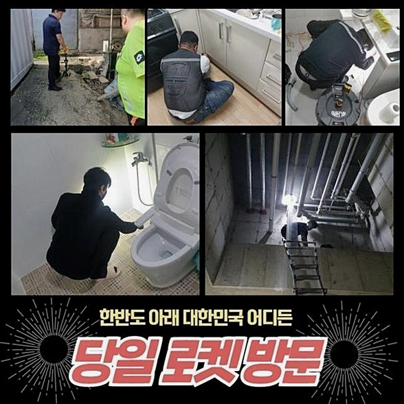
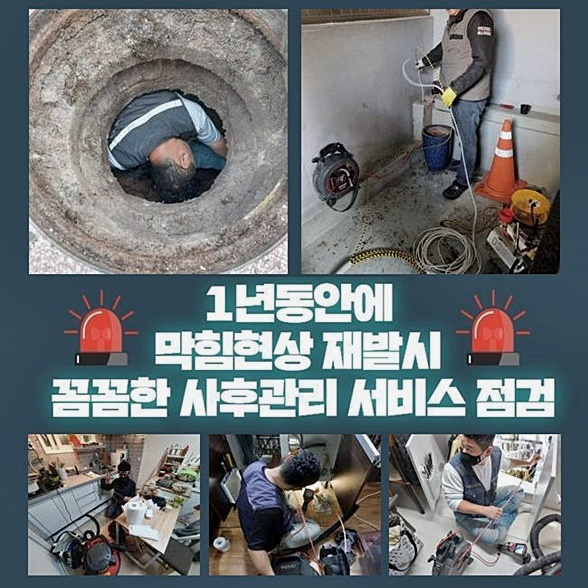
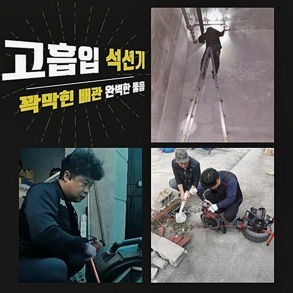
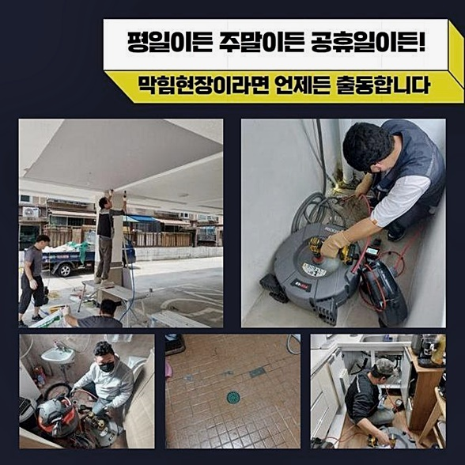
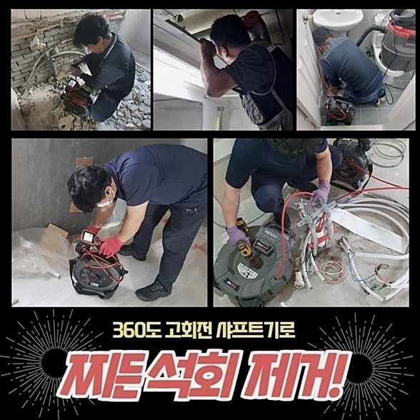
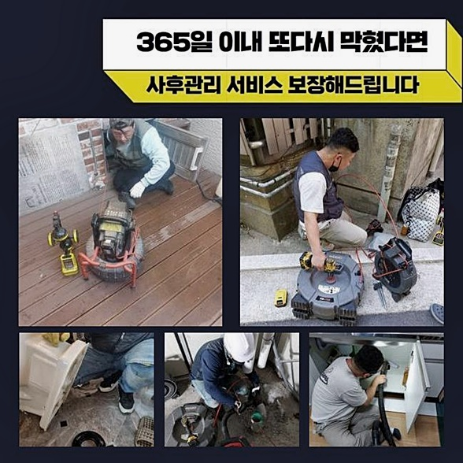

🏠 천안 일봉동세탁실막힘 하수구청소장비 누수탐지공사
천안 일봉동 싱크대막힘 전문 시공 후기

📋 작업 개요
- 위치: 천안 일봉동, 일봉동, 천안
- 서비스 유형: 싱크대막힘, 하수구막힘, 배관막힘, 누수수리, 역류해결, 뚫는업체, 배관청소, 설비공사
- 작업 일시: 2024. 6. 2. 15:07
- 업체명: 하수구수사대 (010-5615-2118)
🔍 문제 상황
물막힘 현상이 나타나면 고객님들은 어떤 방법을 채택하여 극복하려 하십니까?
하수구의 통행 장애를 그저 회피 하신다면 또 다른 문제로 진행이 되어버려 복잡한 국면에 직면하실 수 있어요
여러 케이스를 통해 보면 방치하는 시간이 길어지면 수밀성 문제나 역류 현상까지 생겨 정도가 심한 이슈로 심화됩니다
막힘이 발생한 것을 발견하시면 즉각 움직이는 것이 이상적인 대책이라고 권장드리고 있습니다
물이 내려가는 배수구들에 오류가 생긴다면 갖은 정보를 수집하고 쉽게 배관 뚫는 법이라는 조언을 직접 실천하여 뚫음을 목적으로 삼으실텐데요
여러 방법을 접목했는데도 잠시 트였다가 재발하여 시간이 흐른 다음에 또 여러 차례 시행하는 작업을 해보셨을 것입니다
천안 일봉동세탁실막힘 하수구청소장비 누수탐지공사
고장난 배관을 혼자서 돌파해 보고자 시도하는 것은 돌파하기 어려운 일이죠
눈으로 감지되는 찌꺼기로 인해 나타난 막힘현상이라면 그 부분만 관통하면 나아지겠지만 만일 한참 내려간 구조에서 이슈가 발생하면 아무리 세제를 넣어도 뚫어뻥을 사용해도 꿈쩍하지 않을 때가 훨씬 많을겁니다
출시된 청소 제품들을 접하는 것마다 몽땅 장만하지 마시고 배관공의 기술적 지원을 통하여 설비를 고치시는게 장기적으로 이득이라고 권유드리고 싶습니다

🔎 원인 분석
💡 전문가 진단: 정밀 진단 장비를 사용하여 슬러지의 고착 여부를 판명하고 타격/세척 작업을 실시했습니다.
배관 오류의 원인을 정보를 습득한 후에 배관에 개입하는 방식은 대충 뚫은 것과 퀄리티가 하늘과 땅 차이입니다
녹여준다는 클리너를 부어서 주방에서 막혀버린 하수 문제를 극복하려고 노력을 직접 실행했다고 하셨어요
물길이 날 때 까지 땀흘리면서 작업을 뚫으려고 도전하시다가 제풀에 지쳐 포기하셨고 저희 업체를 물색하여 도움을 요청하게 되셨어요
막힌 장소로 안내받아 이동해서 근원적인 문제점을 잡아내기 위하여 깊숙한 배수 경로로 내시경 기기를 투입했습니다
촬영 렌즈와 조명을 통해 배관 속 상황을 알아차리게 되었답니다
다양한 성분이 혼재된 이물들이 벽쪽으로 자리잡아 갯벌 진흙이 굳은것마냥 물길을 점점 좁게만드는 사태를 초래한 것이었습니다
함께 상태를 보신 고객님도 가득찬 모습에 충격을 받으셨는데 빨리 조치하셨다면 수습하기 곤란한 지경으로 확장되지 않았을 것입니다
이물질들로 배관이 갑갑하게 물이 배출될 시에는 뭔가 결함이 생긴것이니 구멍을 통하여 기기를 이용하여 찌꺼기를 싹 씻어내려야 합니다
배관의 숨구멍을 트이게 해주고 스케일링 성능도 두루 갖춘 긴 몸체와 사슬이 있는 플렉스샤프트를 도달시켜서 효과적인 청소를 시도하죠
이 장비는 체인이 360도로 전방위로 회전하면서 대상을 자잘하게 부수는데 이 순간에는 집중해서 해야합니다
샤프트와 병행하여 카메라도 넣어서 파쇄가 문제없이 이루어지고 있는 중인지 모니터링 하며 진행하기에 청결도가 확보됩니다

🔧 작업 과정
수로의 중간쯤 갔을까 카메라로 별개의 문제에 간파하게 됐습니다
주방 속에 장치된 수로와 인접한 다른 기능의 파이프가 형성된 것을 알게됐는데 보일러 쪽 배관과 맞닿아 있었는데요
여기에 매립되어 있던 하수관에서 여러번 물이 역행한 적이 있었는지 근방에 오물들이 바닥면적을 채우고 있었어요
이것때문에 그간 악취가 스믈스믈 풍겨서 힘들었다고 하셨어요
역류의 흔적이 남은 곳이 이 냄새의 근원이었을텐데 더이상의 역류는 안생기게 그에 맞는 작업으로 막아드려야 했으니 내시경으로 구조물을 찬찬히 살폈습니다
목표 지점은 뚜렷해 보였고 관에 붙어있는 이물질이 흡입하면 될 듯하여 샤프트를 다시 가져와서 해당 지점에 위치시켜서 점진적으로 처리해 주면 마무리 지을 수 있겠다고 짐작이 되더라고요
파쇄를 거치고 난 다음 파편들을 습식청소기로 흡입해서 올려보니 상당량이 장치 내부로 들어와 있는 상황을 보면서 배관이 힘들었겠다 싶었어요
이전에 처리했던 경험을 회상해 보면 더 과한 양이 나왔던 사례도 꽤나 있었습니다
내측을 관찰하는 카메라가 없으면 제대로된 근원부를 모르기에 맞춤형 청소 방식을 수립하지 못할 것입니다
저희 업체는 전문 장비들이 비치되어 있어서 전체적인 배수로의 상태를 책임질 수 있는 것입니다
전체 작업을 마쳤다면 표면에서 부터 외부 배관에 이르는 면까지 꼼꼼히 분석하면서 잘 뚫렸나 확인했습니다
한치 앞도 보이지 않던 찌든 때가 사라져서 모든 배관이 반짝이도록 개조된 수로를 고객님이 관찰하시면서 불안했던 심리까지도 찌꺼기와 함께 없어졌다고 하셨네요
마무리를 하는 와중에 다른 뚫음작업을 의뢰 받아서 작업장으로 이동했는데 각 건물의 배관들마다 형상은 차이점을 갖습니다
대략 감을 잡아보니 싱크대의 찌꺼기가 내려가서 수로가 정지된듯 하다고 대략 가정을 세워두고 직접 체크를 해봤더니 역시 찌꺼기로 가득했죠
문제의 원인을 확인하자마자 소형 고압직사기를 가져와 단시간에 침전물을 떨어뜨리는 작업을 시행하고서 최종적으로 수리가 끝났습니다
물분사기를 사용한 작업이 매듭지어지면 물길도 확 트이고 배관 미관 까지도 정갈하게 변한 사실을 마주하게 될 것입니다


✅ 작업 완료
오래되고 낡은 배관이라고 관련 정보를 분석한 뒤에 상황에 맞는 기계를 활용해 체계적으로 가동시킨다면 환골탈태한 하수배관을 보상으로 드리겠습니다!
하수구 물의 정체도 그렇지만 냄새 문제가 있다면 깊숙한 지점까지 내려가 스케일 작업을 한다면 한순간에 악취를 잡을 수 있으니 세제를 무리하게 붓지 마세요
지체없는 출장을 보장할 뿐만 아니라 저렴한 가격을 제안해 드리니 과다한 지출때문에 주저하실 필요 없어요
이밖에 궁금한점이 잔여한다면 언제라도 상담을 요청해 주셔도 좋으며 눈높이에 맞춰서 설명드릴게요!
배관 장애부터 시작하여 배관설비와 연계된 모든 오류들을 유연하게 대응해 드리겠습니다




⚠️ 베란다 누수 및 방수 관리 방법
- ✅ 비가 많이 올 때 창틀 주변이나 아래층 천장에 얼룩이 생기는지 정기적으로 확인해 보세요.
- ✅ 우수관 주변 실리콘 마감이 들뜨거나 깨진 틈새가 있는지 손상 여부를 수시로 체크하세요.
- ✅ 베란다 바닥 타일의 줄눈(메지)이 소실되면 그 틈으로 물이 침투하여 누수가 유발됩니다.
- ✅ 누수 의심 증상 발견 시 방치하면 아래층 손실이 커지므로 즉시 전문가의 진단을 받으십시오.
💡 핵심 정리
- 확실한 장비 작업(내시경 점검 및 샤프트 스케일링)으로 원인을 뿌리 뽑습니다.
- 작업 후 1년 이내에 동일한 부위 재발 시 100% 무상 A/S 서비스를 보장합니다.
- 서울 · 경기 · 인천 전 지역에 24시간 언제든 긴급 출동할 수 있도록 항시 대기 중입니다.
❓ 자주 묻는 질문 (FAQ)
🚨 천안 일봉동 싱크대막힘 문제로 고민이신가요?
정확한 원인 진단과 확실한 시공으로 재발 없는 해결을 약속드립니다.
24시간 긴급 출동 | 서울 · 경기 · 인천 전지역 | 1년 내 재발 시 무상 A/S